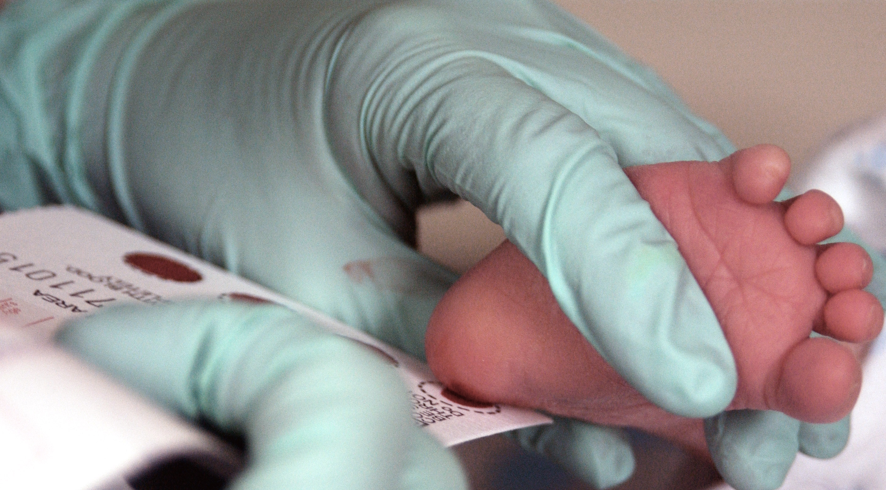
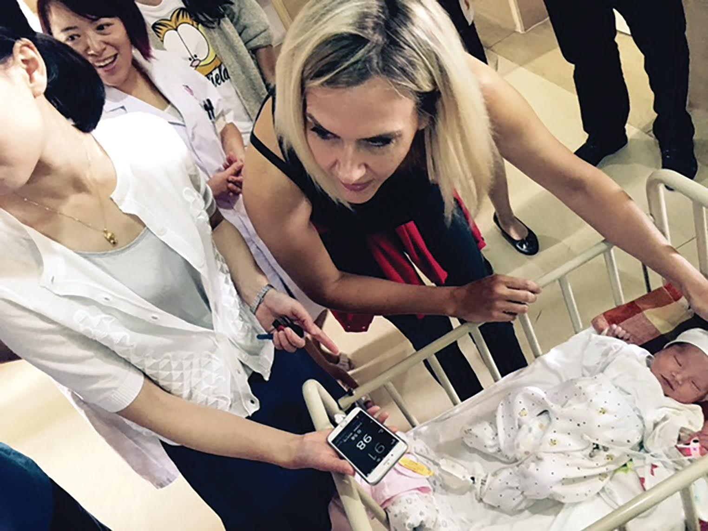
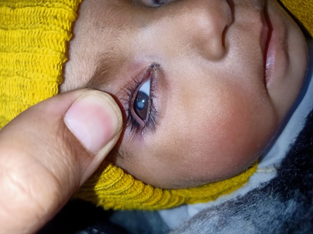
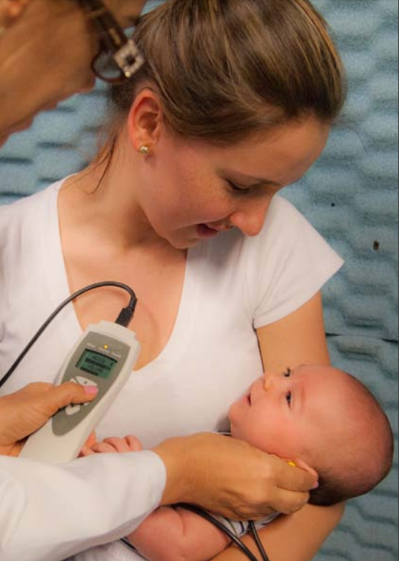
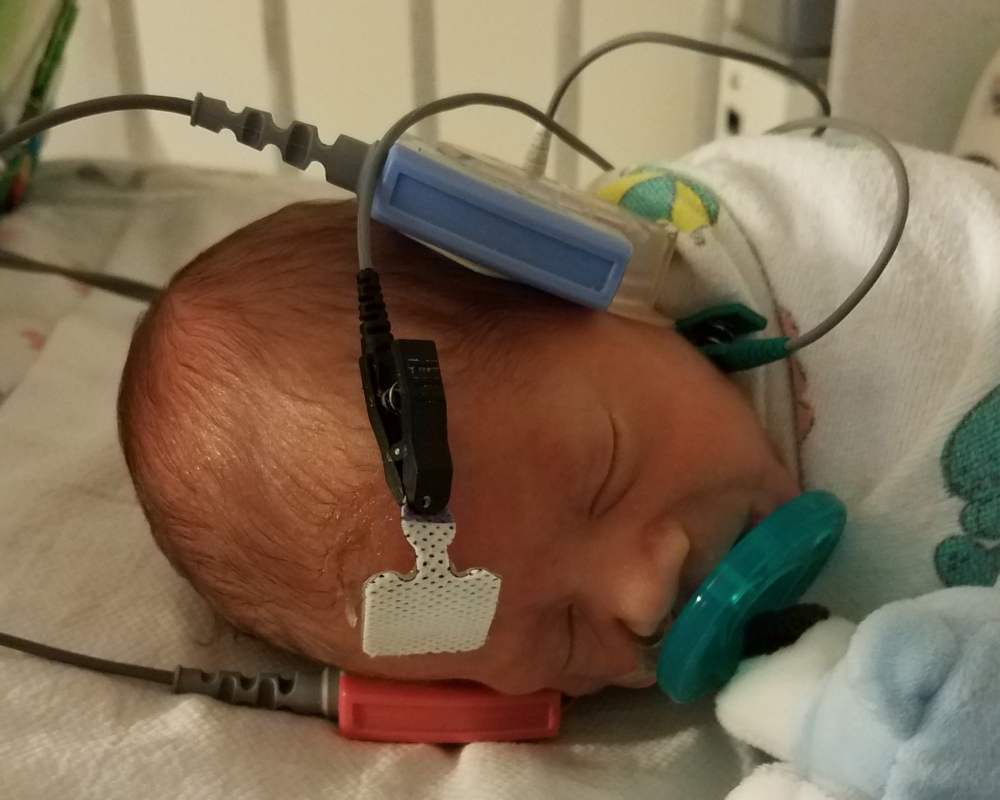
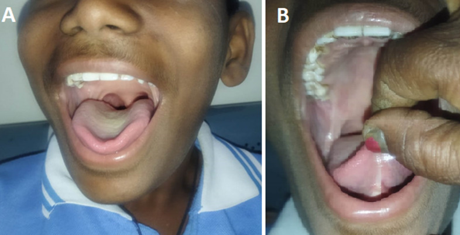
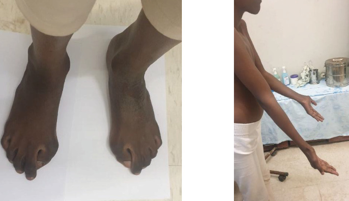
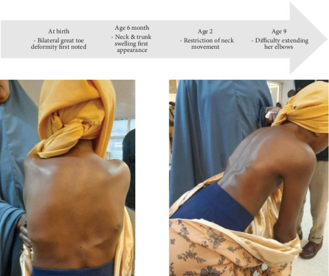

Triagem neonatal: a mesma lógica de toda triagem, traduzida em 6 apelidos pediátricos
Se a criança ainda não tem sintoma, por que faz sentido testá-la? E por que justamente 6 testes — não 1, não 20?
Triagem é um conceito de saúde pública antes de ser um conceito clínico. A lógica é simples e válida pra qualquer fase da vida: rastrear quem provavelmente tem uma doença antes que ela apareça com sintoma. Por que? Porque algumas doenças, se você diagnostica antes do sintoma surgir, você muda a história natural delas. E muda muito.
No período neonatal essa lógica vira regra: o recém-nascido não vai contar pra você que está com fenilcetonúria, não vai descrever uma cardiopatia crítica, não vai apontar pra cóclea e dizer "aqui não está chegando som". Existem várias avaliações no período neonatal — exame físico completo, anamnese materna, exames laboratoriais conforme a clínica — mas o que se chama formalmente de triagem neonatal é um conjunto sistemático e padronizado de testes feitos em toda criança, doente ou aparentemente saudável, com janela temporal definida.
O Brasil consolida essas avaliações em 6 triagens obrigatórias. Cinco são clássicas, com lugar histórico no Programa Nacional de Triagem Neonatal (PNTN). A sexta entrou recentemente, normatizada por lei federal específica. Cada uma testa um sistema diferente, com técnica diferente, em janela diferente, com conduta diferente quando dá alterada. E cada uma ganhou um apelido pediátrico que é, ao mesmo tempo, mnemônico e identitário.
PezinhoTriagem metabólica
CoraçãozinhoOximetria de pulso
OlhinhoReflexo vermelho
OrelhinhaTriagem auditiva
LinguinhaFrênulo lingual
DedinhoHálux / FOP
O pediatra fala tudo no diminutivo — e o vocabulário identitário ajuda. Você dificilmente esquece os 6 nomes uma vez que entende o porquê de cada apelido apontar pra estrutura anatômica avaliada: pezinho do calcanhar pro sangue; coraçãozinho como referência metonímica ao oxímetro; olhinho pro reflexo vermelho; orelhinha pra audição; linguinha pro frênulo lingual; dedinho pro hálux.
Quiz — fixação
Questão 1 — MCQ
Qual é o objetivo PRINCIPAL de uma triagem neonatal?
Gabarito: B. Triagem é rastreamento populacional pré-sintomático com intenção de mudar história natural.
Distractor A inverte: triagem precede suspeita clínica, não a confirma. C: triagem complementa exame físico. D: as 6 triagens cobrem cardiologia, audição, visão, anatomia oral, ortopedia, metabolismo — escopo amplo.
Questão 2 — MCQ
As 6 avaliações da triagem neonatal brasileira são:
Gabarito: B. As 5 clássicas + dedinho (FOP) compõem o quadro vigente.
A inventa "narizinho" — não existe. C confunde: dedinho do pé (hálux) é o exame; polegares malformados aparecem em ~50% dos casos FOP mas isso é detalhe da p4.10. D inventa "perninha".
Questão 3 — V ou F
A triagem neonatal substitui o exame físico do recém-nascido.
Gabarito: FALSO. Triagem é complementar — adiciona testes sistemáticos sobre o exame físico padrão.
Alguns testes (dedinho, linguinha) inclusive eram parte do exame físico já antes da normatização formal.
A seguir: o pezinho — a triagem mais antiga e mais densa do PNTN, com 7 condições rastreadas em 1 papel filtro.
4.2 / 12E6 · Mnemônico-âncoraItens 009-025
Pezinho — papel filtro, calcanhar e a janela 3-5 dias que muda o prognóstico
O teste do pezinho é a triagem mais antiga do Programa Nacional de Triagem Neonatal (PNTN) — programa do Ministério da Saúde que padroniza a triagem metabólica no Brasil. O nome popular vem da técnica: a coleta é feita no calcanhar do recém-nascido. Algumas gotas de sangue, depositadas em papel filtro (o mesmo material do coador de café — referência didática boa de guardar porque ancora visualmente o exame), secam no próprio papel e são enviadas ao laboratório. Termo técnico: o sangue é absorvido pelo papel filtro (absorvido com D, sem o S de adsorção — o detalhe é cobrado em prova quando aparece).
Pegadinha 1 — Localização da punção
A coleta NÃO é feita no meio do calcanhar. É feita nas bordas — lateral ou medial. O motivo é anatômico-mecânico: no meio do calcanhar a punção pode lesar estruturas ósseas (risco de osteocondrite e osteomielite descrito na literatura técnica do PNTN). Nas bordas, o tecido mole é suficiente pra obter as gotas sem alcançar osso.

B19 · Coleta do teste do pezinho. Punção em borda lateral do calcanhar do RN com gotas de sangue depositadas em papel filtro. Nota técnica visual: a coleta acontece na borda lateral/medial, NÃO no meio plantar — exatamente a pegadinha cobrada em prova.
Foto: Staff Sgt. Eric T. Sheler, U.S. Air Force (2007) — Wikimedia Commons · Domínio público (obra de servidor federal dos EUA).
Pegadinha 2 — Janela temporal
A coleta padronizada acontece entre o 3º e o 5º dia de vida. Você precisa decorar isso assim — "3 ao 5" — porque é alvo de três armadilhas distintas:
Janela antiga 3-7 dias: questões muito antigas ainda trazem essa orientação. Mudou há tempos. Atual é 3-5.
"3º dia" ≠ "após 72 horas": o 3º dia de vida começa a partir das 48h, não das 72h. Confundir muda a interpretação.
<48h é proibido por motivo bioquímico: detalhamento na próxima página.
E qual é o limite tardio aceitável? Se por algum motivo especial a coleta não puder ser feita na janela ideal, ela pode ser feita até o final do 1º mês de vida (oficialmente até 28 dias). Mas isso é exceção, não regra. Por quê? Porque várias das doenças rastreadas pelo pezinho exigem início de tratamento nas primeiras 2 semanas de vida pra modificar o prognóstico. Coletar tarde = perder a janela terapêutica = perder o benefício da triagem.
Quiz — fixação
Questão 1 — MCQ
Qual a localização correta da punção pra coleta do teste do pezinho?
Gabarito: C. Bordas lateral/medial evitam lesão de estruturas ósseas.
A é a pegadinha clássica — "meio" parece intuitivo mas tem risco osteocondral. B ignora a recomendação anatômica explícita. D inventa local que não é usado.
Questão 2 — MCQ
A janela ideal de coleta do pezinho é:
Gabarito: C. Janela atual padronizada pelo MS PNTN.
A: <24h = pico fisiológico TSH + sem proteína acumulada = FP + FN. B: <48h ainda inaceitável pelo mesmo motivo. D: janela antiga, desatualizada há anos — armadilha em questões pré-atualização.
Questão 3 — V ou F
Coleta do pezinho no 28º dia de vida tem o mesmo valor diagnóstico que coleta no 4º dia.
Gabarito: FALSO. O limite tardio até 28 dias existe pra situações excepcionais, mas várias doenças rastreadas exigem início de tratamento nas primeiras 2 semanas de vida.
Coleta tardia detecta a doença, mas perde a janela terapêutica que justifica a triagem.
A seguir: as 7 doenças que o pezinho rastreia, com a dosagem específica de cada uma, e o mecanismo bioquímico do <48h — por que FP TSH e por que FN PKU.
4.3 / 12E7 · Comparação chocanteItens 026-061
Pezinho — as 7 condições da Etapa 1 e a única que dispensa confirmação
6 das 7 condições
Pezinho alterado → exige um segundo exame pra confirmar diagnóstico.
vs
1 das 7 condições
Pezinho alterado já basta. Diagnóstico direto. Adivinha qual? E sabe por quê?
Etapa 2Galactosemias, aminoacidopatias, distúrbios do ciclo da ureia, beta-oxidação de ácidos graxos
Etapa 3Doenças lisossômicas
Etapa 4Imunodeficiências primárias
Etapa 5Atrofia muscular espinhal (AME)
A regra geral do pezinho é dupla: (1) toda condição alterada exige confirmação por exame específico; (2) uma única condição é exceção — hemoglobinopatia. Vamos pelas 7.
1. Hipotireoidismo congênito — dosagem: TSH
A causa mais frequente é disgenesia tireoidiana — alteração anatômica da própria tireoide. A criança produz TSH normalmente (hipófise íntegra), mas a tireoide não produz hormônio tireoidiano. Sem feedback negativo, o TSH sobe — e o teste detecta. Por isso a dosagem do hipotireoidismo congênito é TSH, não T4.
2. Fenilcetonúria (PKU) — dosagem: fenilalanina
PKU é um erro inato do metabolismo — a criança não converte fenilalanina em tirosina por deficiência da enzima fenilalanina hidroxilase. A fenilalanina acumula nos tecidos, e o acúmulo crônico leva a deficiência intelectual grave se não tratada. Conduta: dieta com restrição de fenilalanina — a criança não pode receber aleitamento materno exclusivo em livre demanda (leite contém fenilalanina).
3. Hemoglobinopatias — eletroforese de hemoglobina (no próprio papel filtro)
A criança em recém-nascido normal tem padrão hemoglobínico F + A. Hemoglobina F é fetal — não tem nada a ver com falciforme. Hemoglobina A é o padrão adulto. Se aparece hemoglobina S no rastreamento, isso pode indicar:
Traço falciforme (heterozigoto, geralmente assintomático)
Anemia falciforme (homozigoto SS, doente)
4. Fibrose cística — IRT (tripsina imunorreativa)
IRT é uma enzima pancreática que se acumula no sangue da criança com fibrose cística (ductos pancreáticos obstruídos pela secreção espessa). Pezinho alterado → confirmação por teste do suor.
17-OH-progesterona é precursor da síntese de cortisol. Na HAC, o bloqueio enzimático impede a conversão final em cortisol → o precursor acumula. Pezinho alterado → confirmação por dosagem específica + ACTH.
6. Deficiência de biotinidase — atividade enzimática direta
A enzima biotinidase é medida diretamente no papel filtro. Atividade reduzida → criança tem deficiência. Confirmação por nova dosagem enzimática quantitativa.
7. Toxoplasmose congênita — IgM anti-toxoplasma
Entrou recentemente no PNTN via Lei 14.154/2021. Pezinho com IgM positiva → confirmação por sorologia materna + sorologia da criança + investigação clínica completa.
Mecanismo do <48h — dois resultados falsos opostos
A janela <48h gera dois resultados falsos simultâneos que se anulam logicamente mas existem juntos por mecanismos bioquímicos opostos:
Falso positivo para TSH (hipotireoidismo): o recém-nascido tem pico fisiológico de TSH nas primeiras 24-48 horas de vida — adaptação à vida extrauterina, sem doença. Se você dosa nesse pico, o resultado vem alto sem haver doença.
Falso negativo para PKU: o que se dosa em PKU é a própria fenilalanina acumulada. Pra acumular fenilalanina, a criança precisa estar recebendo proteína pela via oral — leite materno ou fórmula. Nas primeiras horas de vida, antes do estabelecimento da alimentação enteral, não há fenilalanina acumulada → resultado vem falsamente baixo.
Tabela síntese — V21
Condição
Dosagem usada
Mecanismo da alteração
Cuidado especial
Hipotireoidismo congênito
TSH
TSH sobe por falta de feedback (disgenesia tireoidiana)
TSH não detecta forma central
PKU
Fenilalanina
Acúmulo por bloqueio enzimático
Dieta restritiva — sem AM livre demanda
Hemoglobinopatias ★
Eletroforese Hb
Aparecimento de HbS
ÚNICA que dispensa confirmação
Fibrose cística
IRT
Enzima pancreática acumula
Confirmação por teste do suor
HAC
17-OH-progesterona
Acúmulo de precursor de cortisol
Risco de crise adrenal aguda
Deficiência biotinidase
Atividade enzimática
Atividade reduzida medida direto
Cofator vitamínico do metabolismo
Toxoplasmose congênita
IgM anti-Toxo
Entrada via Lei 14.154/2021
Cross-link M2 — confirmar com sorologia
Quiz — fixação
Questão 1 — MCQ
Qual das condições rastreadas pelo pezinho dispensa confirmação por exame específico?
Gabarito: C. A eletroforese de hemoglobina no próprio papel filtro é diagnóstica direta.
A: PKU exige confirmação por dosagem específica de fenilalanina sérica. B: hipotireoidismo exige confirmação por TSH + T4 livre séricos. D: HAC exige dosagem confirmatória + ACTH.
Questão 2 — MCQ
Coleta do pezinho realizada com 24 horas de vida pode gerar:
Gabarito: B. TSH tem pico fisiológico nas primeiras 24-48h (FP); fenilalanina ainda não acumulou por falta de proteína enteral (FN).
A inverte os mecanismos — confunde quem decora sem entender. C e D ignoram que os mecanismos são opostos.
Questão 3 — V ou F
A letra F da hemoglobina F refere-se a falciforme.
Gabarito: FALSO. F é de fetal. Falciforme é a hemoglobina S.
Pegadinha clássica — o padrão hemoglobínico normal do RN é F + A; aparecimento de S indica traço ou anemia falciforme.
A seguir: o coraçãozinho — a triagem que mais aparece em prova, com fluxograma que mudou em 2022 em 3 cortes simultâneos.
4.4 / 12E4 · PegadinhaItens 062-093
Coraçãozinho — o teste que não busca a cardiopatia mais comum, e o fluxograma 2022 que mudou em tudo
Em termos quantitativos, o coraçãozinho é a triagem que mais aparece em prova. E aparece justamente porque tem 4 pegadinhas estruturais cobráveis em 1 fluxograma só. Vamos pela ordem.
1. O coraçãozinho NÃO busca cardiopatia frequente
O objetivo do teste do coraçãozinho é detectar cardiopatia congênita crítica — aquela que pode levar o RN a óbito nos primeiros dias de vida, no momento em que o canal arterial fecha. Não é a cardiopatia mais frequente (a mais frequente é comunicação interventricular, que não é crítica). Não é a cardiopatia mais sintomática inicialmente. É a que depende do canal arterial pra manter circulação pulmonar ou sistêmica.
Atresia pulmonarSepto íntegro ou em Tetralogia de Fallot
HLHSSíndrome do coração esquerdo hipoplásico
Coarctação críticaInterrupção do arco aórtico
TGATransposição dos grandes vasos
Tronco arteriosoTronco único — mistura constante
Atresia tricúspideFluxo pulmonar canal-dependente
DATVPDrenagem anômala total das veias pulmonares
Sensibilidade ~70% pra cardiopatia crítica — não é teste perfeito, mas captura a maioria antes da deterioração. Por que essas cardiopatias dependem do canal? A próxima página (4.5) desenvolve a fisiologia inteira — circulação fetal, forame oval, ducto venoso, MSD pré-ductal vs MI pós-ductal. Aprofundamento opcional, mas é o que faz o teste fazer sentido.
2. Quem entra: IG ≥ 35 semanas Atualização 2022
Pelo Ministério da Saúde + SBP 2022, o teste é feito em toda criança com IG ≥ 35 semanas. Mudou em 2022 (era ≥34). Por quê o corte? Crianças <35 semanas em geral estão internadas e monitorizadas em UTI neonatal — não entram no protocolo de rotina porque o objetivo da triagem é evitar deterioração após alta hospitalar.
3. Quando: 24-48 horas de vida
Não antes de 24h: o canal arterial pode ainda estar muito aberto e mascarar a cardiopatia
Não depois de 48h: o canal já está fechando — se a criança tem cardiopatia canal-dependente, ela já pode estar deteriorando
4. Como: MSD + um dos MIs
Saturação no membro superior direito (MSD) E em qualquer um dos membros inferiores (MID ou MIE, tanto faz). MSD é fixo. MI é flexível.
MSD — pré-ductal
96%
exemplo de medida normal
MI — pós-ductal
95%
qualquer membro inferior

B20 · Oxímetro de pulso em RN. Sensor posicionado pra medida de SatO₂. No coraçãozinho, a comparação MSD pré-ductal vs MI pós-ductal revela shunt direita-esquerda canal-dependente.
Wikimedia Commons · uso educacional permitido sob licença CC.
Aqui mora a parte mais cobrada em prova. SBP atualizou o fluxograma em agosto/2022 mudando 3 cortes simultaneamente. Questões de 2020-2021 estão desatualizadas com a orientação antiga.
Fluxograma coraçãozinho — atualização SBP agosto/2022. Negativo usa E (AND); duvidoso usa OU (OR); positivo basta uma medida ≤89%. Repete até 2 vezes em 1h.
Negativo
≥95% E ≤3%
as duas condições simultâneas
vs
Duvidoso
90-94% OU ≥4%
uma das duas já basta
Quiz — fixação
Questão 1 — MCQ
RN com IG 36 semanas, 30 horas de vida. Saturação MSD = 97%, MID = 93%. Como classificar?
Gabarito: C. Nenhuma medida ≤89% (não é positivo); diferença = 97-93 = 4% (≥4% → DUVIDOSO pelo conector OU).
A é a armadilha: aluno olha as duas saturações ≥95% e esquece a diferença ≥4%. B aplicaria se houvesse medida ≤89%. D inventa categoria.
Questão 2 — MCQ
A atualização de 2022 do fluxograma do coraçãozinho incluiu, entre outras mudanças:
Gabarito: B. 1× → 2× é a pegadinha mais quente.
A inverte a mudança (foi ≥34 → ≥35). C inverte (a categoria duvidoso FOI introduzida em 2022). D inverte o corte (≤95% era o corte antigo de positivo).
Questão 3 — V ou F
O teste do coraçãozinho NÃO é aplicado de rotina a RN com menos de 35 semanas porque essas crianças, em geral, já estão internadas e monitorizadas.
Gabarito: VERDADEIRO. O objetivo da triagem é evitar deterioração após alta hospitalar.
Bebê pré-termo internado já tem oximetria contínua + monitor cardíaco — a triagem isolada nesse contexto é redundante.
A seguir: por que MSD é pré-ductal — circulação fetal completa, forame oval, canal arterial, ducto venoso. Aprofundamento opcional, mas é o que faz tudo isso fazer sentido.
4.5 / 12E2 · Dado impactanteItens 094-142
Por que MSD é sempre pré-ductal: forame oval, canal arterial e ducto venoso
estruturas fetais comunicam circulação direita e esquerda enquanto o feto está dentro do útero: forame oval, canal arterial, ducto venoso. As três desaparecem nas primeiras horas após o nascimento. Cardiopatia crítica é, em essência, uma cardiopatia que precisa que uma delas permaneça aberta pra criança não morrer. É por isso que o coraçãozinho mede MSD vs MI.
A circulação fetal é diferente da circulação do adulto. Não é "quase igual" — é estrutural e fisiologicamente diferente. Entender essa diferença é o que justifica todo o teste do coraçãozinho, e é o que conecta este conteúdo à reanimação neonatal (oxímetro no MSD).
O ponto de partida: a placenta substitui o pulmão
Durante a vida fetal, quem faz a troca gasosa não é o pulmão da criança — é a placenta. O pulmão fetal está colabado, cheio de líquido, sem ventilação. Não faz sentido o sangue fetal passar preferencialmente pelos pulmões (que não trocam gás nenhum). Faz sentido desviar o sangue dos pulmões e enviá-lo prioritariamente pras estruturas que mais precisam de oxigênio: cérebro e coração.
O sangue mais oxigenado do feto vem da placenta, passa pela veia umbilical, e tem que chegar prioritariamente às estruturas nobres. As 3 estruturas comunicantes fetais existem pra fazer exatamente isso.
V18 — Circulação fetal. Três shunts fetais (forame oval, canal arterial, ducto venoso) garantem que sangue oxigenado da placenta chegue prioritariamente ao cérebro/coração via aorta pré-ductal. MSD = sempre pré-ductal porque a subclávia direita sai do tronco braquiocefálico, antes da entrada do canal arterial na aorta.
As 3 estruturas comunicantes fetais
Forame oval
Comunica o átrio direito com o átrio esquerdo (shunt intra-atrial fetal). Permite que sangue oxigenado vindo da VCI (via ducto venoso, vindo da placenta) atravesse direto pro lado esquerdo sem precisar passar pelos pulmões.
Canal arterial
Comunica a artéria pulmonar com a aorta (shunt extra-cardíaco fetal). Permite que sangue ejetado pelo ventrículo direito (que sairia para os pulmões) seja desviado pra aorta — escapando do circuito pulmonar de alta resistência.
Ducto venoso
Desvia o sangue oxigenado vindo da placenta pela veia umbilical direto pra dentro da veia cava inferior. Resultado: a VCI fetal carrega sangue oxigenado — completamente diferente da VCI do adulto, que carrega sangue não oxigenado.
A lógica do fluxo fetal
O AD fetal recebe simultaneamente:
Sangue oxigenado vindo da VCI (que vem da placenta via veia umbilical + ducto venoso)
Sangue não oxigenado vindo da VCS (drenagem da metade superior do corpo)
Por questão anatômica e física, o sangue oxigenado da VCI atravessa preferencialmente o forame oval → AE → mitral → VE → aorta. Vai direto pras estruturas nobres irrigadas pela aorta pré-ductal (cérebro, coração).
O sangue não oxigenado da VCS segue preferencialmente pra VD → artéria pulmonar. Mas aqui entra o canal arterial: como a resistência vascular pulmonar fetal está muito alta (pulmões colabados, sem ventilação), o sangue ejetado na artéria pulmonar segue preferencialmente pela via de menor resistência — o canal arterial → aorta pós-ductal.
A aorta fetal tem dois territórios distintos
Aorta pré-ductal = região da aorta antes da entrada do canal arterial. Tem sangue mais oxigenado (vindo do AE/VE via forame oval). Dela saem coronárias + tronco braquiocefálico (que dá origem à subclávia direita → artéria axilar direita → braquial direita → o MSD inteiro).
Aorta pós-ductal = região da aorta depois da entrada do canal arterial. Tem sangue misto (oxigenado da circulação esquerda + não oxigenado vindo do canal arterial). Irriga o restante do corpo, incluindo os membros inferiores.
Por que MSD é sempre pré-ductal
O membro superior direito é irrigado pela subclávia direita, que se origina do tronco braquiocefálico, que sai da aorta antes da entrada do canal arterial. Logo, MSD = pré-ductal por anatomia universal.
O membro superior esquerdo geralmente também é pré-ductal, mas existem variações anatômicas individuais. O MSD é a única posição universalmente confiável pra medir saturação pré-ductal. Por isso a oximetria neonatal sempre se padroniza no MSD — coraçãozinho, oxímetro de pulso na reanimação neonatal, VPP com SatO₂ alvo por minuto de vida. Tudo o que envolve "saturação pré-ductal" no RN se mede no MSD.
Após o nascimento: a transição
Quando o RN nasce, a placenta sai de circulação. O AD passa a receber sangue não oxigenado retornando da circulação sistêmica (padrão adulto se instala). As 3 estruturas comunicantes começam a fechar:
Ducto venoso fecha rapidamente (sem fluxo umbilical, perde função)
Forame oval fecha funcionalmente nas primeiras horas (gradiente de pressão se inverte)
Canal arterial começa a fechar em horas-dias — fecho anatômico completo em ~3 semanas
É justamente nessas primeiras horas-dias que cardiopatia crítica canal-dependente se manifesta — porque o canal arterial está fechando enquanto a circulação da criança não consegue funcionar sem ele.
Cardiopatia congênita crítica — a definição mecanicista
Cardiopatia congênita crítica = cardiopatia em que circulação pulmonar OU circulação sistêmica vão depender de fluxo sanguíneo através do canal arterial após o nascimento. Sem canal aberto, o sangue não alcança o pulmão (cardiopatia com fluxo pulmonar canal-dependente) ou não alcança a aorta sistêmica (cardiopatia com fluxo sistêmico canal-dependente). Em ambos os casos, fechamento do canal = colapso clínico.
Exemplo 1 — Atresia da válvula pulmonar (fluxo pulmonar canal-dependente)
Sangue não oxigenado chega ao AD, NÃO consegue ir pra artéria pulmonar (atresia da válvula), é desviado pelo forame oval pro AE → VE → aorta. Pós-nascimento, sem o canal arterial aberto, NÃO passa sangue pelos pulmões — incompatível com a vida. Com o canal aberto, parte do sangue na aorta atravessa o canal (esquerda → direita) pra artéria pulmonar, oxigena nos pulmões, volta pro AE → VE → aorta. A aorta da criança tem mistura → saturação diminui visivelmente.
Exemplo 2 — Interrupção do arco aórtico (fluxo sistêmico canal-dependente)
Sangue não oxigenado vai pelo AD → VD → artéria pulmonar → pulmão (oxigena) → AE → VE → aorta interrompida. Em algumas interrupções do arco, a obstrução está antes da emergência da subclávia direita/tronco braquiocefálico — nesse caso, os membros superiores recebem sangue oxigenado (vindo da aorta pré-ductal antes da interrupção), mas os membros inferiores recebem mistura (chegando via canal arterial). Resultado clínico: diferença de saturação pré-ductal alta (MSD) vs pós-ductal baixa (MI).
Box lateral — Cardiopatias críticas detectadas pelo coraçãozinho
Cardiopatia
Mecanismo
Tipo de dependência
Atresia pulmonar
Sangue não passa pelo pulmão sem canal
Fluxo pulmonar canal-dependente
HLHS
VE/aorta hipoplásicos — circulação sistêmica via canal
Fluxo sistêmico canal-dependente
Coarctação crítica / Interrupção do arco
Obstrução aórtica — circulação inferior via canal
Fluxo sistêmico canal-dependente
TGA
Circuitos paralelos — mistura via canal + forame
Mistura crítica canal-dependente
Tronco arterioso
Tronco único — mistura constante
Variável
Atresia tricúspide
Sangue não chega ao VD/pulmão sem canal
Fluxo pulmonar canal-dependente
DATVP
Sangue pulmonar drena errado — depende de comunicação
Mistura crítica
Quiz — fixação
Questão 1 — MCQ
Por que MSD é a posição padronizada pra medir saturação pré-ductal no recém-nascido?
B inventa razão técnica. C confunde anatomia. D inventa razão instrumental.
Questão 2 — MCQ
Cardiopatia crítica com fluxo pulmonar canal-dependente significa:
Gabarito: B. Sem canal aberto, o sangue não alcança o pulmão (atresia pulmonar é o exemplo paradigma).
A inverte. C inverte (o canal NÃO obstrui — ele permite a passagem). D ignora o ponto central — fechamento do canal = colapso.
Questão 3 — V ou F
O ducto venoso conecta a artéria pulmonar à aorta.
Gabarito: FALSO. Ducto venoso conecta a veia umbilical à VCI (carrega sangue oxigenado da placenta direto pra circulação sistêmica).
Quem conecta artéria pulmonar à aorta é o canal arterial. Pegadinha clássica de troca de nomes.
A seguir: volta ao protocolo de triagem — olhinho. Reflexo vermelho, oftalmoscópio (não lanterna), e a pegadinha clássica de prova.
4.6 / 12E8 · Erro desmontadoItens 143-162
Olhinho — reflexo vermelho-alaranjado bilateral simétrico, e por que NÃO é lanterna
O reflexo vermelho pode ser feito com lanterna.Não pode. Tem que ser com oftalmoscópio. E essa pegadinha cai literal em prova. A diferença não é estética — é física, e vai mudar o que o exame consegue detectar.
A pesquisa do reflexo vermelho (teste do olhinho) é feita por todo pediatra logo após o nascimento. Não é exame de oftalmologista — é triagem de pediatra. E ela se repete várias vezes ao longo da puericultura, exatamente porque algumas das doenças que ela rastreia (especialmente retinoblastoma) podem aparecer ao longo dos primeiros anos de vida, não necessariamente no nascimento.
Técnica correta
A luz projetada do oftalmoscópio percorre o eixo visual, atinge a retina no fundo do olho, reflete, e esse reflexo emerge pela pupila como uma luz vermelho-alaranjada. É o mesmo princípio físico do "olho vermelho" das fotos antigas com flash — quando os antigos tiravam foto com flash e o olho saía vermelho, era exatamente esse reflexo escapando pela pupila aberta no escuro.

B22 · Leucocoria. Reflexo branco em uma das pupilas — sinal cardinal de patologia do eixo visual. DDx principal: catarata congênita, retinoblastoma, glaucoma congênito. Conduta: encaminhar pro oftalmologista.
Wikimedia Commons · uso educacional.
O que se busca: reflexo vermelho-alaranjado bilateral E simétrico
B21 · Reflexo vermelho positivo bilateral. Ilustração autoral — reflexo retiniano alaranjado-avermelhado simétrico em ambas as pupilas configura exame normal. A simetria é tão importante quanto a presença do reflexo.
Ilustração autoral Bauer — fallback declarado pelo buscador (B21 inconclusivo em fontes abertas).
Normal
Reflexo vermelho-alaranjado bilateral, simétrico
Leucocoria
Leucocoria à direita — sinal cardinal de patologia
Reflexo vermelho normal = presente bilateralmente E simétrico. Os dois critérios juntos:
Bilateral: presente em ambos os olhos
Simétrico: mesma intensidade e cor nos dois lados
Boa prática: examinar os dois olhos simultaneamente
Além de avaliar cada olho individualmente (com o oftalmoscópio sobre cada um), é fundamental fazer o exame em ambos os olhos ao mesmo tempo — alguma distância do bebê, oftalmoscópio iluminando os dois olhos simultaneamente. Só assim é possível detectar assimetria. A diferença sutil entre os reflexos pode passar despercebida se você examinar um olho de cada vez.
Alterações possíveis
Reflexo ausente em um dos lados — pode indicar obstrução do eixo visual (catarata, opacidade) ou neoplasia retiniana
Reflexo assimétrico entre os dois olhos — assimetria de intensidade ou cor sugere patologia
Leucocoria — reflexo branco em vez de vermelho-alaranjado, sinal clínico cardinal
Diagnósticos diferenciais
Catarata congênita — opacidade do cristalino. Causa clássica: Síndrome da Rubéola Congênita (SRC — tríade de Gregg: catarata + surdez + cardiopatia). Galactosemia (doença metabólica rara), idiopática.
Retinoblastoma — neoplasia intraocular maligna mais frequente da infância. Leucocoria é o sinal de apresentação mais comum.
Glaucoma congênito — aumento da pressão intraocular com alterações estruturais do olho.
Outros (DDx expandido — opcional): persistência do vítreo primário hiperplásico (PVPH), doença de Coats, toxocaríase ocular, descolamento de retina congênito, retinopatia da prematuridade grave, coloboma.
Quando: janela inicial + repetições
Primeira realização: ainda nas primeiras 72 horas de vida (recomendação conjunta SBP + Sociedade Brasileira de Oftalmologia Pediátrica + Conselho Brasileiro de Oftalmologia)
Repetições: 3 vezes ao ano nos 3 primeiros anos de vida
Por que repetir 3×/ano por 3 anos?
Um dos grandes objetivos da repetição é o diagnóstico precoce do retinoblastoma. Retinoblastoma é reconhecido principalmente nos primeiros anos de vida — não está presente no nascimento na maioria dos casos. A alteração do reflexo pode ser o primeiro sinal, e o pediatra do dia-a-dia (não o oftalmologista) é quem está com a criança nas consultas de rotina. A repetição sistemática captura o tumor enquanto ele ainda é tratável com preservação do olho.
Quiz — fixação
Questão 1 — MCQ
A técnica correta pra realização do reflexo vermelho é:
Gabarito: B. Oftalmoscópio projeta feixe paralelo alinhado com o examinador, capturando o reflexo retiniano.
A é a pegadinha cobrada. C é técnica oftalmológica diferente (lâmpada de fenda exige consultório especializado). D inventa.
Questão 2 — MCQ
RN nasce com reflexo vermelho assimétrico. Qual a conduta correta?
Gabarito: B. Reflexo é triagem; alterado encaminha pro especialista, sem tentar diagnóstico inicial.
A: repetir não muda achado. C: tratamento empírico sem diagnóstico é incorreto. D: imagem não é a próxima etapa diante de reflexo alterado.
Questão 3 — V ou F
A repetição 3 vezes ao ano por 3 anos visa principalmente o diagnóstico precoce do retinoblastoma.
Gabarito: VERDADEIRO. Retinoblastoma é a neoplasia intraocular maligna mais frequente da infância e aparece principalmente nos primeiros anos de vida.
A repetição sistemática captura o tumor ainda tratável.
A seguir: a triagem auditiva — única triagem com mais de uma técnica disponível (EOA + BERA), e a única que conversa diretamente com TORCHS e reanimação grave.
4.7 / 12E7 · Comparação chocanteItens 163-176
Orelhinha — EOA mostra cóclea, BERA mostra nervo
EOA
Detecta problemas até a cóclea. Pré-neural — eco coclear captado.
vs
BERA / PEATE
Detecta o que vem DEPOIS da cóclea. Neural — resposta eletrofisiológica de tronco encefálico.
Trocar uma pela outra = perder o diagnóstico de surdez neurossensorial. E essa troca cai em prova.
A triagem auditiva (teste da orelhinha) é a próxima triagem obrigatória — e é a única com mais de uma técnica disponível. Diferentemente das outras (1 método único por triagem), aqui existem 2 avaliações possíveis com indicações diferentes.
As 2 técnicas
EOA — Emissões Otoacústicas
Técnica: um fone pequeno é colocado no conduto auditivo externo. O fone emite um ruído sonoro. A onda percorre conduto → orelha média → atinge a cóclea e provoca a vibração das células ciliadas externas. Essa vibração produz um pequeno eco que volta pelo mesmo caminho. O mesmo fone capta esse eco.
Resultado: se há eco, a via até a cóclea está funcional. Se não há eco, há problema entre o conduto e a cóclea (inclusive a própria cóclea).
Limitação fundamental: testa até a cóclea. Problemas depois da cóclea — via nervosa, surdez neurossensorial pós-coclear, neuropatia auditiva — NÃO são detectados pela EOA. A criança pode ter cóclea íntegra (EOA passa) e via auditiva nervosa lesada (criança não escuta).
BERA / PEATE
BERA (Brainstem Evoked Response Audiometry) e PEATE (Potencial Evocado Auditivo de Tronco Encefálico) são a mesma coisa, com nomes em idiomas diferentes. Em prova brasileira, BERA domina — sigla inglesa muito mais popular que a portuguesa.
Técnica: muito mais complexa que EOA. Eletrodos são posicionados na cabeça do bebê. Um estímulo sonoro é emitido. O exame emite o estímulo E capta a onda eletrofisiológica gerada pelo estímulo — a resposta neural ao som no nível do tronco encefálico.
Resultado: se a resposta neural existe e tem padrão normal → via auditiva neural íntegra. Se a resposta está ausente ou anormal → surdez neurossensorial (lesão pós-cóclea).
Comparação estrutural
EOA
BERA / PEATE
O que detecta
Problemas até a cóclea (conduto + orelha média + cóclea)
Problemas pós-cóclea (via neural)
Como funciona
Capta eco coclear gerado por estímulo sonoro
Capta resposta eletrofisiológica neural a estímulo sonoro
Tipo de surdez detectada
Pré-neural (condutiva + coclear)
Neurossensorial retrococlear
Equipamento
Fone pequeno no conduto
Eletrodos + estimulador + computador analisando onda
Complexidade
Rápido, simples
Mais demorado, mais complexo
Uso na triagem
Universal em sem fator de risco; reteste se falhar em IRDA-1
Obrigatório em IRDA-2 (junto com EOA)

B23 · Equipamento EOA. Fone pequeno emite ruído sonoro e capta o eco coclear de volta. Testa a via até a cóclea — limitada quando há lesão pós-coclear (precisa de BERA).
Wikimedia Commons · uso educacional.

B24 · BERA — eletrodos no RN. Eletrodos captam a resposta eletrofisiológica neural ao estímulo sonoro. Único exame que avalia a via auditiva neural pós-cóclea — obrigatório em IRDA-2.
Wikimedia Commons · uso educacional.
Por que essa diferença importa
Algumas crianças têm cóclea íntegra (EOA passa normal) e via neural lesada (criança não escuta). Esse perfil é chamado de espectro de neuropatia auditiva — e é exatamente o perfil de risco mais alto. Sem BERA, essa criança sai da maternidade com triagem "normal" e o diagnóstico se atrasa anos.
Quem tem risco de surdez neurossensorial? Crianças com indicadores de risco categoria 2 (IRDA-2) — UTI prolongada, hiperbilirrubinemia com exsanguíneo, anóxia grave, EHI, prematuridade extrema. Detalhamento integral na próxima página.
Quiz — fixação
Questão 1 — MCQ
EOA e BERA diferem essencialmente porque:
Gabarito: B. Diferença anatômica do alcance.
A inverte — EOA é menos sensível que BERA pra surdez neurossensorial. C inventa hierarquia profissional. D inverte os métodos.
Questão 2 — MCQ
Por que BERA é obrigatório em crianças com risco de surdez neurossensorial?
Gabarito: B. BERA capta resposta eletrofisiológica neural — única forma de avaliar via pós-coclear.
A inverte (BERA é mais complexo, não mais barato). C: EOA é universal pra sem fator de risco. D: triagem ≠ diagnóstico; BERA é triagem.
Questão 3 — V ou F
PEATE e BERA são exames diferentes.
Gabarito: FALSO. PEATE (português) = BERA (inglês). Mesma técnica, dois nomes.
Pegadinha tradicional de aluno que decorou siglas sem entender equivalência.
A seguir: o fluxograma completo — IRDA-1 vs IRDA-2 vs sem fator de risco, com a pegadinha fototerapia ≠ exsanguíneo e a atualização recente do MS sobre BERA + EOA simultâneos em IRDA-2.
4.8 / 12E4 · PegadinhaItens 177-199
Orelhinha — IRDA-1 vs IRDA-2 e a pegadinha fototerapia ≠ exsanguíneo
Recentemente o Ministério da Saúde alterou o programa de triagem auditiva. Antes: EOA universal + BERA pra crianças com qualquer fator de risco. Agora: divisão em 3 grupos com condutas diferentes pra cada um — sem fator de risco, IRDA-1, IRDA-2. O Guia Nacional da Triagem Auditiva Neonatal publicado pelo MS em 29 de novembro de 2025 mantém essa estrutura e adiciona padronização do prazo de reteste (15 dias).
Os 3 grupos
Grupo 1 Sem fator de risco
Conduta: EOA apenas
Passa: segue acompanhamento de rotina
Falha: reteste (repetir EOA em até 15 dias — Guia TAN 2025)
Falha no reteste: encaminhamento ao CER (Centro Especializado de Reabilitação)
Grupo 2 · IRDA-1 Risco coclear
Perfil: risco aumentado de surdez predominantemente coclear.
Conduta IRDA-1: faz EOA; falha → reteste em 15 dias; falha no reteste → CER.
Grupo 3 · IRDA-2 Risco neurossensorial
Perfil: risco aumentado de surdez neurossensorial / espectro de neuropatia auditiva retrococlear. Risco muito mais alto que IRDA-1.
>5 dias em UTI neonatal
Peso ao nascer <1500g
Hiperbilirrubinemia com necessidade de exsanguinotransfusão ⚠️
ECMO
Ventilação mecânica >5 dias
Anóxia grave (Apgar muito baixo)
Encefalopatia hipóxico-isquêmica (EHI)
Hemorragia peri-intraventricular (HPIV)
Distúrbio neurodegenerativo
Conduta IRDA-2 (atualização recente importante): BERA + EOA SIMULTANEAMENTE. Mesmo passando nas duas, vai pra acompanhamento especializado no CER.
Por que IRDA-2 segue mesmo passando?
Porque o risco residual de desenvolver surdez neurossensorial nos primeiros meses-anos é alto demais pra simplesmente dispensar a criança. EOA + BERA capturam o que existe no momento da triagem, mas alterações podem aparecer ao longo do desenvolvimento. O acompanhamento especializado captura essa janela.
Atualizações cobráveis em prova
Antes: qualquer fator de risco = BERA. Agora: só IRDA-2 = BERA.
Antes: IRDA-2 = só BERA. Agora: IRDA-2 = BERA + EOA simultâneos.
Antes: prazo de reteste não padronizado. Agora (Guia TAN MS nov/2025): reteste em 15 dias quando há falha.
Cross-links com módulos anteriores
Box lateral — Quem é IRDA-2 ao mesmo tempo?
Os critérios IRDA-2 frequentemente se sobrepõem. Quem precisou de ECMO ou VM >5 dias certamente também ficou >5 dias em UTI neonatal. Quem teve EHI grave geralmente teve Apgar baixo + acidose + necessidade de VPP/IOT na sala de parto. Uma criança pode marcar 3-4 critérios simultaneamente. Isso NÃO muda a conduta — basta 1 critério pra disparar IRDA-2.
Quiz — fixação
Questão 1 — MCQ
RN com 39 semanas, 3200g, evoluiu com hiperbilirrubinemia que necessitou fototerapia por 48 horas, com queda dos níveis. Qual a conduta de triagem auditiva?
Gabarito: B. Hiperbilirrubinemia tratada com fototerapia NÃO é critério IRDA-2 (somente hiperbilirrubinemia com EXSANGUINOTRANSFUSÃO entra).
A é a armadilha clássica — você vê "hiperbilirrubinemia" e pula pra IRDA-2. C ignora a obrigatoriedade da triagem. D inverte — BERA não é indicado em IRDA-1.
Questão 2 — MCQ
Conduta correta em criança classificada como IRDA-2 que passou em ambos os exames (BERA e EOA) na triagem inicial:
Gabarito: C. IRDA-2 vai pro CER mesmo passando — o risco residual de surdez neurossensorial nos primeiros meses justifica seguimento especializado.
A subestima o risco. B inventa cronograma. D dispensa indevidamente.
Questão 3 — V ou F
A atualização recente do MS na triagem auditiva mudou a conduta de IRDA-2 — antes era só BERA, agora é BERA + EOA simultaneamente.
Gabarito: VERDADEIRO. As duas avaliações em conjunto desde o início aumentam a sensibilidade do rastreio.
Mudança consolidada no Guia TAN MS — questões antigas podem trazer só BERA pra IRDA-2.
A seguir: a 5ª triagem — única com controvérsia institucional ativa entre MS e SBP. Voz crítica preservada literal.
4.9 / 12E8 · Erro desmontadoItens 200-215
Linguinha — Bristol, anquiloglossia COM repercussão e a controvérsia SBP × MS preservada
Anquiloglossia grave sempre indica frenectomia.Não indica. O critério não é o protocolo de Bristol isolado. O critério é repercussão clínica. Operar criança que mama bem é erro. E aqui é onde duas sociedades médicas brasileiras discordam frontalmente — e essa discordância vale entender.
O nome técnico correto é "Protocolo de Avaliação do Frênulo Lingual" — apelido pediátrico: teste da linguinha.
O Protocolo de Bristol (BTAT)
Avalia parâmetros do exame físico do frênulo lingual: formato da língua, protrusão da língua, e outros parâmetros estruturais. Objetivo: identificar crianças com anquiloglossia grave — encurtamento do frênulo lingual.
Por que importa a anquiloglossia grave?
Pode comprometer a amamentação (dificuldade pra mamar / ser amamentada)
Pode gerar comprometimento de linguagem no futuro
Pode comprometer ganho de peso por dificuldade alimentar
A conduta clássica em anquiloglossia grave é a frenectomia — procedimento cirúrgico pequeno, um pique no frênulo lingual. Mas — e aqui mora a regra de ouro — NÃO basta anquiloglossia grave.
A regra de ouro clínica — sobrevive à controvérsia institucional
Critérios de repercussão clínica:
Dificuldade de mamar (suga mal, solta o seio, cansa rápido)
Comprometimento de ganho de peso
Comprometimento de linguagem (avaliável tardiamente, ao longo do desenvolvimento)
Anquiloglossia SEM repercussão — criança mamando bem, ganhando peso adequado, sem sinais de dificuldade funcional — a princípio NÃO se indica nenhuma abordagem cirúrgica. Mesmo que o frênulo esteja anatomicamente curto, mesmo que o Bristol classifique como anquiloglossia grave.
A controvérsia SBP × MS — laudo dual preservado
Aqui mora o ponto institucional explicitamente sinalizado. Quando o MS incorporou a obrigatoriedade da triagem, a Sociedade Brasileira de Pediatria (SBP) discordou explicitamente — argumentou que não fazia sentido incorporar dessa forma. A controvérsia continua ativa e tem implicação prática direta na forma como o tema é apresentado em material didático.
Laudo dual · controvérsia institucional
Voz MS — Lei 13.002/2014 + NT 52/2023
Avaliação obrigatória do frênulo em todos os RNs.
Aplicar o Protocolo de Bristol (BTAT) por profissional qualificado (em geral fonoaudiologia).
Score Bristol orienta classificação de risco anatômico.
Voz SBP — manifestação institucional
Pede revogação da Lei 13.002/2014 (sem consulta prévia à entidade na criação da lei).
O exame da cavidade oral já faz parte do exame físico pediátrico de rotina.
Casos clinicamente significativos são facilmente diagnosticáveis no exame pediátrico padrão.
O tamanho do frênulo é altamente variável; protocolo formalizado pode levar a sobreintervenção (cirurgia em crianças que não precisariam).
Ausência de consenso técnico sobre critérios de avaliação e classificação anatômica.
Posição prática consensual — sobrevive à controvérsia
Frenectomia SÓ se anquiloglossia com REPERCUSSÃO CLÍNICA.
Anquiloglossia sem repercussão = NÃO operar (mesmo com Bristol baixo).
Repercussão = dificuldade de mamar / ganho de peso / linguagem comprometida.
Por que essa controvérsia vale entender
Porque ela molda como o tema cai em prova. Provas mais recentes tendem a cobrar o critério clínico (repercussão), não o escore numérico do Bristol. Quem decora "Bristol 0-3 = opera" sem entender a controvérsia clínica cai em pegadinha. A pergunta usual é "anquiloglossia grave em RN mamando bem — opera?" e a resposta correta é não.

B25 · Avaliação do frênulo lingual. Visualização da face inferior da língua durante o protocolo de Bristol. A decisão cirúrgica não depende do escore isolado — depende de repercussão clínica (mamada, ganho de peso, linguagem).
Wikimedia Commons · uso educacional.
Quiz — fixação
Questão 1 — MCQ
RN com anquiloglossia classificada como grave pelo Protocolo de Bristol, mama vigorosamente ao seio materno com boa pega, está com ganho de peso adequado. Conduta correta:
Gabarito: C. Anquiloglossia sem repercussão clínica NÃO opera.
A e B caem na armadilha de decorar Bristol e operar protocolarmente. D escala intervenção sem indicação.
Questão 2 — MCQ
Sobre a controvérsia entre Ministério da Saúde e Sociedade Brasileira de Pediatria no Teste da Linguinha:
Gabarito: B. Posição institucional da SBP é por revogação.
A inverte. C nega a controvérsia existente. D inverte.
Questão 3 — V ou F
A indicação de frenectomia depende exclusivamente do escore obtido no Protocolo de Bristol.
Gabarito: FALSO. A indicação consensual depende de repercussão clínica.
Bristol orienta avaliação anatômica, mas não substitui o critério clínico.
A seguir: a 6ª triagem — a mais recente, normatizada por Lei federal de 8 de janeiro de 2025: o teste do dedinho. FOP, hálux deformado, e a proibição absoluta de via intramuscular.
4.10 / 12E2 · Dado impactanteItens 216-242
Dedinho — hálux deformado, Lei 15.094/2025 e a proibição absoluta de via intramuscular
~40
anos de vida média. Causa principal de óbito: doença respiratória restritiva por ossificação da caixa torácica. Sem tratamento específico. Sem cura. Cada injeção intramuscular pode acelerar a doença. Tudo isso captura olhando o hálux do RN em sala de parto. É essa a 6ª triagem.
Mais recentemente, o Ministério da Saúde tornou obrigatório um 6º exame de triagem no período neonatal. Já fazia parte do exame físico de rotina, mas a normatização legal garante adesão universal — em todos os serviços, pra todos os recém-nascidos. A doença alvo é Fibrodisplasia Ossificante Progressiva (FOP) — também conhecida como Miosite Ossificante Progressiva. O jargão pediátrico de uso comum é FOP.
O que é FOP
Característica clínica fundamental: ossificação disseminada de tecidos que não deveriam se ossificar. Tecido mole — músculo, ligamento, tendão, fáscia — é progressivamente substituído por tecido ósseo ao longo da vida.
Consequência clínica progressiva:
Perda progressiva de mobilidade articular (movimentos limitados por "ossificação extra-esquelética")
Restrição da caixa torácica (ossificação progressiva da musculatura torácica e intercostal limita expansão pulmonar)
Doença respiratória restritiva crônica
Pneumonia recorrente
Vida média: ~40 anos segundo a normativa MS (faixa real na literatura internacional: 40-46 anos, com mediana ~40-41; alguns pacientes alcançam a 6ª década com cuidado multidisciplinar otimizado).
Causa principal de óbito: doença respiratória restritiva por restrição da caixa torácica + pneumonia.
Genética
Herança autossômica DOMINANTE com penetrância completa.
Gene afetado: ACVR1 (locus 2q24.1), também chamado ALK2.
Mutação mais comum: c.617G>A; p.Arg206His (R206H) — presente em ~95% dos pacientes com FOP.
Mecanismo: a mutação causa ganho de função do receptor — confere responsividade anômala à activina A (ligante normalmente antagonista da via BMP), levando à ossificação heterotópica de tecidos moles.
Maioria dos casos é mutação de novo (não herdada) — pais sem doença, criança com fenótipo completo. Casos familiares são raros.
Sem tratamento específico
FOP não tem tratamento específico disponível atualmente. A conduta clínica é reduzir ao máximo o processo de substituição de tecido mole por tecido ósseo — ou seja, evitar os gatilhos que aceleram a doença.
Flare-up — os episódios de progressão
Crises de progressão da FOP são chamadas de flare-up. Cada flare-up é um episódio em que parte do tecido muscular ou ligamentar é substituída por tecido ósseo — perda funcional permanente.
Gatilhos de flare-up:
Espontâneo (ocorre ao longo da vida sem motivo identificável)
Trauma local — pancada, queda, lesão muscular
Injeção intramuscular — qualquer injeção IM pode deflagrar flare-up
Implicações práticas — a vacina é o tema mais importante
Criança com FOP NÃO recebe vacinas por via intramuscular. Criança com FOP NÃO recebe medicações por via intramuscular. Vacinas tradicionalmente IM precisam ser adaptadas — algumas podem ser feitas por via subcutânea alternativa, outras não.
Não é "improvisar via SC no consultório". É encaminhar à RIE pra estratégia estruturada e segura. Sutil mas importante: a via alternativa também precisa de planejamento.
A avaliação prática — o teste do dedinho
A avaliação prática é realizada na sala de parto como exame do hálux do recém-nascido. Percentual grande das crianças com FOP (~95% — sinal cardinal) já apresenta deformidade do hálux ao nascimento, bilateralmente:
Hálux curto
Hálux em valgo
Falange única ou fusionada
Aproximadamente 50% das crianças com FOP também apresentam polegares malformados (deformidade nas mãos), mas a deformidade do hálux é a mais comum e o achado de rastreamento.

B26 · Hálux FOP bilateral. Deformidade típica — hálux curto, em valgo, falange única ou fusionada. Presente em ~95% dos pacientes ao nascimento, sinal cardinal de rastreamento.
Imagem clínica · uso educacional.

B27 · FOP — ossificação heterotópica avançada. Evolução progressiva — tecido muscular e ligamentar substituído por tecido ósseo. A restrição da caixa torácica é a principal causa de óbito. Por isso a triagem do hálux ao nascimento é decisiva — janela única pra evitar IM gatilho.
Imagem clínica · uso educacional.
Conduta diante de hálux alterado
Encaminhar pra avaliação genética
Diagnóstico molecular: sequenciamento do gene ACVR1 (mutação R206H confirma)
Centro de Referência em Doenças Raras coordena seguimento
Calendário vacinal redesenhado via RIE — sem IM
Educação familiar sobre proteção contra trauma e gatilhos
Por que esta triagem é nova
Tema ainda não cai em prova de residência ativamente — você ainda não vai encontrar a questão sobre isso. Mas é apostável que comece a aparecer em breve, porque:
A Lei 15.094/2025 é recente (jan/2025) e cria pressão regulatória pra incorporação curricular
Doença rara é alvo recorrente da banca em provas de pediatria/genética
A pegadinha "sem IM" é muito limpa pra cobrar
Quiz — fixação
Questão 1 — MCQ
Sobre a Fibrodisplasia Ossificante Progressiva (FOP), assinale a alternativa correta:
Gabarito: B. AD penetrância completa, mutação ACVR1 R206H em ~95% dos casos, sem cura.
A inverte (não é recessiva e não há tratamento específico). C inventa herança. D inverte (é congênita, não adquirida).
Questão 2 — MCQ
Conduta vacinal correta em criança com diagnóstico confirmado de FOP:
Gabarito: C. NT 43/2025 MS orienta encaminhamento estruturado à RIE.
A é a pegadinha que mata — IM é gatilho de flare-up. B priva a criança de imunização necessária. D abandona a proteção imunológica.
Questão 3 — V ou F
O achado clínico que disparou a inclusão do exame do hálux na triagem neonatal é a deformidade do hálux bilateral, presente em aproximadamente 95% dos casos de FOP no momento do nascimento.
Gabarito: VERDADEIRO. O hálux malformado bilateralmente é o sinal cardinal de FOP no RN.
~50% também têm polegares malformados, mas o hálux é o achado dominante e o foco do rastreamento.
A seguir: a síntese das 6 triagens em quadro comparativo único — apelido, quando fazer, o que detecta, conduta se alterado. O quadro que você revisita pra sempre.
4.11 / 12E5 · Meta + checklistItem 243 + síntese
Síntese das 6 triagens: o quadro que você revisita pra sempre
Você vai sair desta página com:
As 6 triagens lado a lado — apelido, quando, como, o que detecta, conduta
As pegadinhas estruturais consolidadas em 1 só vista
A ponte cognitiva pro próximo conteúdo (Apgar score — tema pendente)
As 6 triagens compartilham a mesma lógica de rastreamento — diagnosticar antes do sintoma, mudar a história natural — mas têm técnicas, janelas, achados e condutas totalmente diferentes. A consolidação abaixo é a tabela canônica pra revisão final do módulo.
V27 — Tabela síntese das 6 triagens
Apelido
Triagem técnica
Quando fazer
Como (técnica)
O que detecta
Conduta se alterado
Pezinho
Triagem metabólica
3 a 5 dias (até 28 dias se exceção)
Punção lateral/medial do calcanhar → papel filtro
7 doenças Etapa 1 (Lei 14.154/2021)
Confirmação por exame específico (exceto hemoglobinopatia — já diagnóstica)
Coraçãozinho
Oximetria de pulso
24 a 48h, IG ≥35 sem
Saturação MSD + qualquer MI
Cardiopatia congênita crítica (canal-dependente)
Positivo → eco + cardiologia; duvidoso → repete até 2× em 1h
Critério clínico (mamada, ganho de peso, linguagem), não Bristol isolado
Controvérsia SBP × MS — posição prática é repercussão
Dedinho
4 pegadinhas
Sem IM — vacinas via RIE
Hálux bilateral deformado em ~95% dos FOP
Ainda não cai em prova ativamente; vai cair em breve
Base regulatória: Lei 15.094/2025 + NT 43/2025 MS
Gap declarado — Apgar score
Quiz — fixação
Questão 1 — MCQ
Sobre as 6 triagens neonatais brasileiras, assinale a alternativa correta:
Gabarito: C. Técnica + conectores corretos.
A é falso (cada triagem tem janela própria). B é falso (só hemoglobinopatia dispensa confirmação). D inverte — olhinho é exatamente o pediatra que faz; linguinha em geral é fonoaudiologia mas a regra clínica é pediatra-conhecedor.
Questão 2 — MCQ
Qual das pegadinhas abaixo NÃO corresponde a achado canônico da triagem neonatal brasileira?
Gabarito: B. A relação correta é invertida — exsanguíneo (não fototerapia) indica BERA via IRDA-2.
As demais (A, C, D) são pegadinhas reais e cobradas.
Questão 3 — V ou F
O Apgar score é uma das 6 triagens neonatais brasileiras.
Gabarito: FALSO. As 6 triagens são pezinho, coraçãozinho, olhinho, orelhinha, linguinha e dedinho.
Apgar é avaliação imediata da vitalidade pós-parto (1º e 5º minuto), com lógica distinta de rastreamento. Tema pendente, abordado em conteúdo próprio.
A seguir: o mapa de revisão cruzada — como cada uma das 6 triagens conversa com TORCHS (M2), reanimação (M3) e a base anatômica de M1.
4.12 / 12E5 · Meta + checklistCross-module
Cross-references: como a triagem conversa com TORCHS, reanimação e tudo o mais
Você vai sair desta página com:
O mapa visual de como triagem se conecta a TORCHS (M2) — toxo no pezinho, rubéola no olhinho, CMV na orelhinha
A ponte de M4 com reanimação (M3) — EHI/anóxia grave como IRDA-2, MSD pré-ductal como conceito compartilhado
As 3 questões metacognitivas de revisão ativa pra fixar as 6 triagens
O Módulo 4 fecha a Parte 1 do conteúdo de neonatologia com o vértice protocolar/sistemático — 6 algoritmos paralelos pra rastreamento populacional. Mas nenhuma dessas triagens vive isolada. Cada uma toca conteúdo de módulos anteriores em pontos específicos, e quem entende essas conexões responde questões integradas em prova com folga.
Toxoplasmose congênita entrou na Etapa 1 do PNTN via Lei 14.154/2021. Isso significa que a infecção congênita por Toxoplasma gondii, que aparece em M2 §2.2 (sorologia materna IgG/IgM, calcificações intracranianas difusas, coriorretinite, hidrocefalia), agora é rastreada na triagem metabólica via IgM anti-toxoplasma no papel filtro.
Olhinho ↔ Rubéola congênita (M2)
Catarata congênita é parte da tríade de Gregg (Síndrome da Rubéola Congênita — SRC): catarata + surdez neurossensorial + cardiopatia (especialmente PCA e estenose da artéria pulmonar). Leucocoria captada no reflexo vermelho do RN pode ser a primeira pista clínica de SRC se a sorologia materna não foi clara na gestação.
Orelhinha ↔ CMV congênito (M2)
CMV é a principal causa não-genética de surdez neurossensorial congênita. A criança com CMV congênita (sintomática ou assintomática) entra como IRDA-1 (infecção congênita) → EOA + reteste se falhar. Algumas formas graves de CMV congênita podem cursar com outros achados que classificam como IRDA-2 (>5 dias UTI, anóxia grave secundária a complicações infecciosas), mas a entrada padrão é IRDA-1.
Orelhinha (IRDA-2) ↔ Reanimação grave (M3)
Encefalopatia hipóxico-isquêmica (EHI) e anóxia grave são critérios IRDA-2 — indicam BERA + EOA simultaneamente. A criança que evoluiu com necessidade de reanimação prolongada, MCE, epinefrina, intubação >5 dias, ECMO — todos critérios de M3 vivendo no fluxograma de M4.
MSD = sempre pré-ductal é o conceito que vive tanto em M3 (oxímetro no MSD durante VPP, SatO₂ alvo por minuto de vida) quanto em M4 (coraçãozinho compara MSD vs MI). A página 4.5 (circulação fetal) é a fonte canônica do conceito — M3 §3.7 referencia esta.
Coraçãozinho ↔ Rubéola (M2) — PCA e EAP
A rubéola congênita cursa frequentemente com PCA (persistência do canal arterial) e estenose da artéria pulmonar — cardiopatias que podem ser detectadas pelo coraçãozinho dependendo da gravidade hemodinâmica.
Revisão ativa cumulativa M1+M2+M3+M4
Síntese de fechamento — o que ficou consolidado das 6 triagens
Lógica única de rastreamento neonatal: 6 testes, mesma intenção (capturar pré-sintoma, mudar prognóstico)
6 algoritmos decisórios paralelos: cada um com janela, técnica, critério e conduta próprios
12+ pegadinhas estruturais cobertas (consolidadas em 4.11)
5 atualizações regulatórias recentes internalizadas: Lei 14.154/2021 (pezinho), Lei 13.002/2014 (linguinha), SBP 2022 (coraçãozinho), Guia TAN MS nov/2025 (orelhinha), Lei 15.094/2025 (dedinho)
6 cross-links bidirecionais com M1, M2, M3 ancorados via hash routing
Quiz — fixação
Questão 1 — MCQ
A inclusão da toxoplasmose congênita no teste do pezinho ocorreu por qual marco regulatório?
Gabarito: B. Lei 14.154/2021 estruturou o PNTN expandido em 5 etapas, com toxoplasmose entrando na Etapa 1.
A é a NT sobre linguinha. C é a obrigatoriedade do teste da linguinha. D é a obrigatoriedade do teste do dedinho (FOP).
Questão 2 — MCQ
Criança com encefalopatia hipóxico-isquêmica diagnosticada após reanimação prolongada na sala de parto. Conduta correta na triagem auditiva:
Gabarito: C. EHI é critério IRDA-2 → BERA + EOA + CER mesmo se passa.
A trata como sem fator de risco ou IRDA-1. B atrasa sem justificativa técnica. D dispensa triagem indevidamente.
Questão 3 — V ou F
O conceito de "MSD = sempre pré-ductal" usado na oximetria do coraçãozinho é o mesmo conceito usado na monitorização da saturação durante a reanimação neonatal.
Gabarito: VERDADEIRO. A anatomia do tronco braquiocefálico → subclávia direita = aorta pré-ductal universalmente vale pra qualquer monitorização de oxigenação neonatal.
Por isso o oxímetro de reanimação vai no MSD, e por isso o coraçãozinho compara MSD vs MI — a mesma fisiologia.
Fim do Módulo 4. O fechamento da Parte 1 acontece quando os 4 módulos (M1 + M2 + M3 + M4) ficam disponíveis pra consulta cruzada. A Parte 2 abre temas como Apgar, distúrbios respiratórios, icterícia, sepse neonatal e cuidados pós-reanimação.